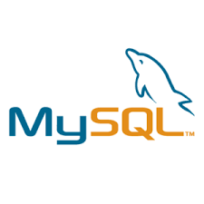

This page displays the courses I have taken up until now
Below are level 1 courses
Computer Essentials
An essential component of working with information technology includes maintaining a computer, using
productivity applications and operating systems, and voicing associated sustainability and environmental issues.
In order to maintain, use, and secure a computer, students describe computer hardware and utilize operating
system software. Students work on using spreadsheet software to solve issues, apply formulas, and create charts
to display data. Students talk about the sustainability of computer software and hardware in terms of both money
and the environment. Practical laboratory tests, such as installing guest operating systems on a host computer
using virtualization software, serve to reinforce theory with application.
Database

Databases are an essential part of many information technology systems and are used to store data. Using Entity
Relation Diagrams (ERDs), students study the foundations of relational database design. They also learn how to
create, alter, and query databases using Structured Query Language (SQL). Using normalization, students design
and build databases that are secure, maintainable, and flexible enough to adjust with business needs. In
contrast to legacy systems and other information storage methods, students learn about the features and
components of a database management system (DBMS).
A strong basis for future research in the topic is provided by having a basic understanding of logic,
problem-solving, and programming language structure. Using algorithms, pseudocode, flowcharts, UML Class
Diagrams, and testing, students gain an introduction to computer programming with a focus on problem analysis
and design. The Java programming language is utilized to implement problem solution designs. Students learn
about object-oriented programming, classes, objects, abstraction, encapsulation, inputs, outputs, coding
conventions, documentation, variables, constants, methods, constructors, one-dimensional arrays, sequential
structures, selection structures, repetition structures, and more through an introduction to the Java
programming language. Through hands-on laboratory evaluations, theory is strengthened with application.
Rapid technological advancements have led to personal and professional decisions that make it difficult for
everyone of us to determine how we might contribute to the new society. The 21st century offers many benefits,
but it also brings with it possible risks and moral dilemmas that need for appropriate answers. In order to help
resolve some of the significant difficulties in our complex society with its conflicting interests, students
investigate the possibilities that lie ahead, evaluate their own abilities and capabilities, and use critical
thinking and decision-making methods.
Regardless of subject or sector of study, businesses continue to look for effective communication skills.
Students concentrate on fulfilling the requirements of successful communication through a hands-on,
career-focused approach. Students practice writing, speaking, reading, listening, finding and documenting
information, and using technology to communicate professionally through a mix of lectures, activities, and
independent study. Students gain and hone communication skills that help them succeed in both academic and
professional settings.
Calculus requires a thorough understanding of algebraic and transcendental functions. In addition to learning
the properties of and graphing algebraic and transcendental functions, students also manipulate algebraic
expressions and solve algebraic equations and linear systems. In order to answer problems concerning computer
systems, students study computer number systems in addition to Boolean algebra and logic. Using vector
components, students also learn how to add and subtract vectors. This course, which is offered in a modular
fashion, is equivalent to finishing all of the math modules A, B, C, D, E, F, and L.